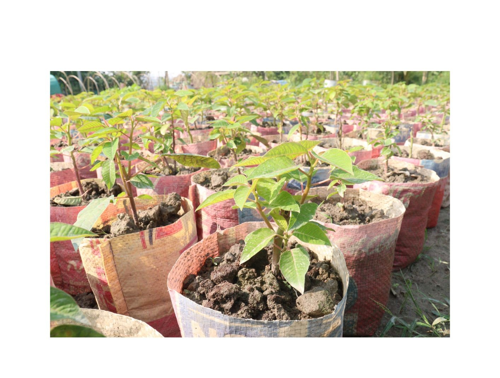
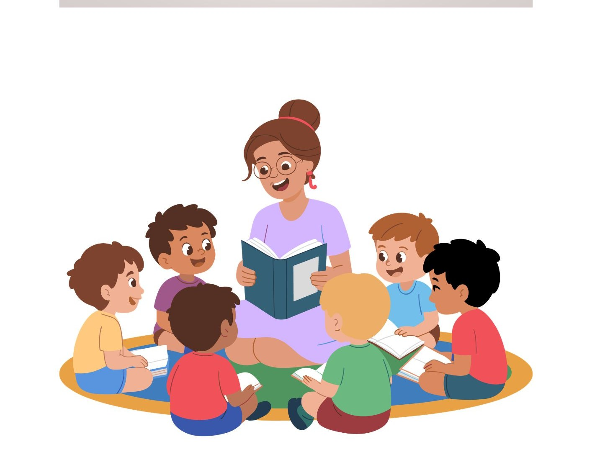

De vuelta a clase
Reto

¿Cómo podemos colaborar desde la escuela con el centro de recuperación de especies?
En común, decidimos crear un vivero en el aula, con el fin de replantar en nuestra localidad todas las plantas que cultivemos.
Asamblea
Gran grupo

Tarea
En la asamblea, compartimos la experiencia vivida en el centro de recuperación de especies, escuchamos lo que piensan los y las demás y, de manera conjunta, nos proponemos encontrar una solución que nos lleve a participar activamente en la mejora de nuestra localidad.